Ship code faster with AI-powered NoSQL schema design
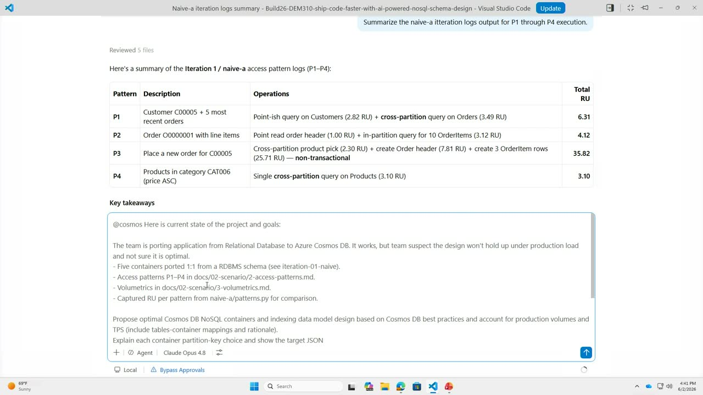
Official description
NoSQL schema design is hard—denormalization decisions, partition key selection, and data modeling patterns require expertise. Use GitHub Copilot and the new Azure Cosmos DB Agent Toolkit to accelerate development with AI-assisted schema generation, query optimization suggestions, and refactoring recommendations. Iterate rapidly with the new Mac/Linux emulator for local testing. Demo shows schema evolution across three iterations in 30 minutes versus days of manual design. Seating for this session is first-come, first-served. Add it to your schedule to plan your day and arrive early to secure a spot.
Summary
Overview
A demo-driven session showing how to apply AI-assisted tooling to NoSQL schema design on Azure Cosmos DB. Using the new Azure Cosmos DB Agent Kit (a packaged set of Copilot skills and best-practice rules) together with GitHub Copilot and the local emulator, the presenters iterate an e-commerce data model from a naive table-to-container mapping to an optimized, access-pattern-driven design and quantify the request-unit and cost savings.
Key announcements
- Azure Cosmos DB Agent Kit — A public, installable package of Copilot skills and over 100 indexed Cosmos DB best-practice rules, deployable into VS Code or any Copilot agent that supports skills, installed via
npx skills @azure-cosmos-db cosmos-agent-kit[inferred command spelling]. [00:04:53m05s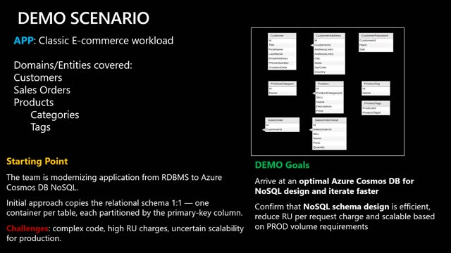
m10sp05s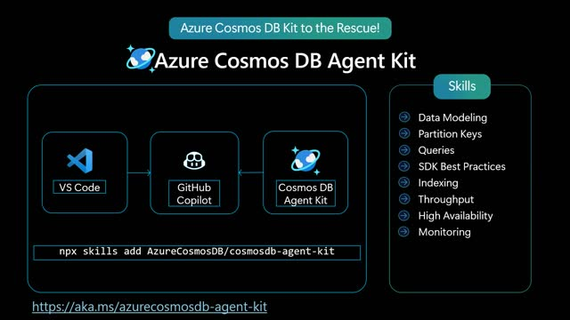
p10s] - Cosmos DB emulator vNext for Linux — The new Linux version of the Azure Cosmos DB emulator became generally available "as of today," running locally on Mac, Windows, or Linux for fast iteration. [00:22:07m05s
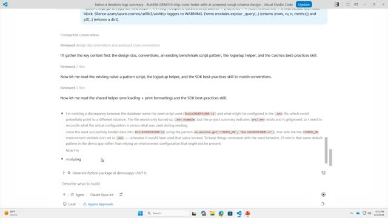
m10s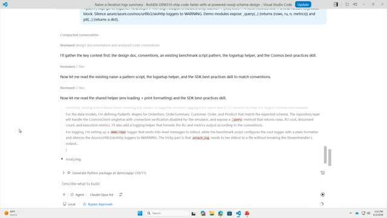
p05s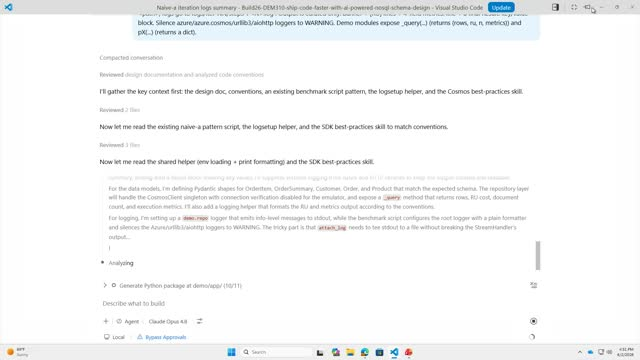
p10s]
{kind=link}
{kind=link}
{kind=link}
{kind=link}
{kind=link}
{kind=link}
{kind=link}
{kind=link}
Topics covered
- Why developers choose Azure Cosmos DB for NoSQL: JSON-based schema evolution, low latency, global distribution, and AI-native workloads storing operational and vector data in one place.
- Built-in intelligent features: integrated vector search, full-text search, and hybrid search with semantic re-ranking, plus integration with Microsoft Foundry.
- Documenting access patterns and volumetrics (dev vs. production targets) as structured context so the agent can reason about scale.
- The container-per-table "naive" anti-pattern and its high request-unit cost.
- The over-embedding anti-pattern, where growing embedded arrays cause write amplification and escalating RU charges.
- Agent-guided optimization: collapsing domains, choosing partition keys, indexing policies, type discriminators, and embedding line items.
- Using the emulator to create containers, migrate/convert CSV-to-JSON data (decimal parsing, ISO date formatting), and validate document shapes.
- Measuring before/after RU consumption across access patterns and projecting monthly cost savings.
Notable quotes
"This is the beauty of Cosmos DB. While Cosmos DB is no SQL database in Azure, only cloud. We also have the very nice emulator which install local in my VM and runs locally and iterating on the emulator is really really fast and easy." — Sergiy Smyrnov
"Every mistake you do early actually going to penalize you later." — Sergiy Smyrnov
"I'll save about $980,000 per month by optimizing my schema. But this is a true overhead we see customers losing on the table by not optimizing and doing lazy conversions." — Sergiy Smyrnov
Products and tools mentioned
- Azure Cosmos DB
- Azure Cosmos DB Agent Kit
- Azure Cosmos DB emulator (vNext, Linux)
- GitHub Copilot
- Visual Studio Code
- Microsoft Foundry
- Model Context Protocol (MCP)
- MongoDB
- Amazon DynamoDB
- Python
- ServiceNow
- OpenAI / ChatGPT
Speakers featured
- Marko Hotti — presenter (introduced Cosmos DB capabilities and AI tooling context)
- Sergiy Smyrnov — presenter (led the live demo)
Follow-up resources
- The Azure Cosmos DB Agent Kit public repository, described as downloadable and installable via
npx(no explicit URL given in the transcript).
Frames
{kind=link}
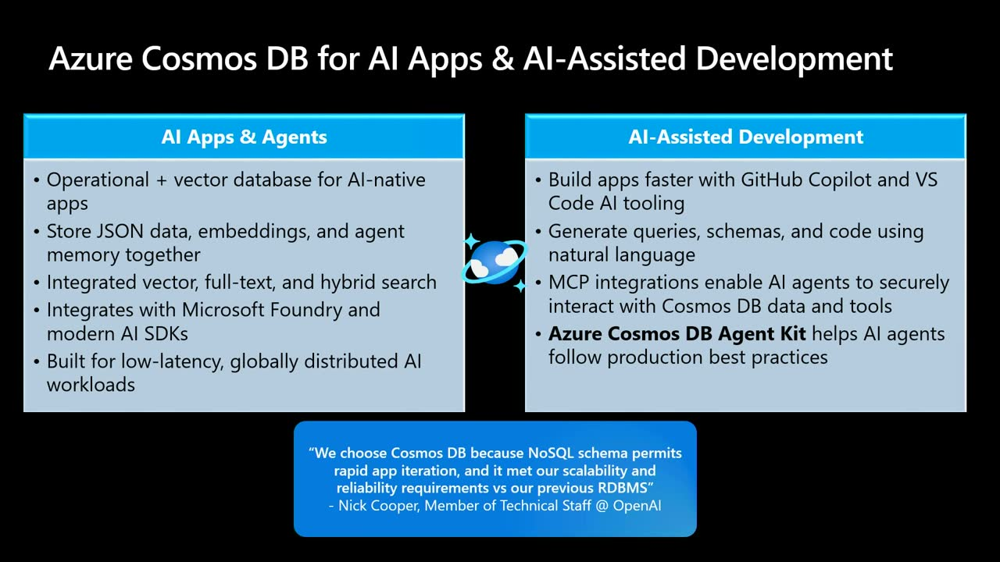
{kind=link}
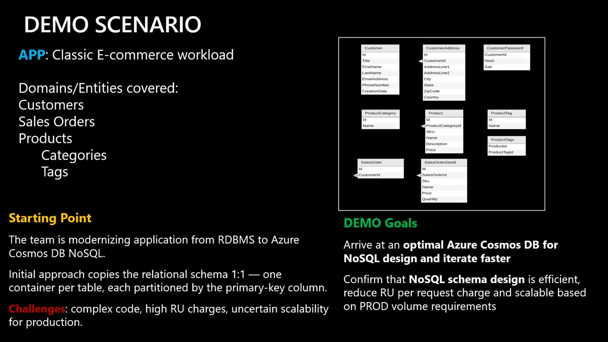
{kind=link}
{kind=link}
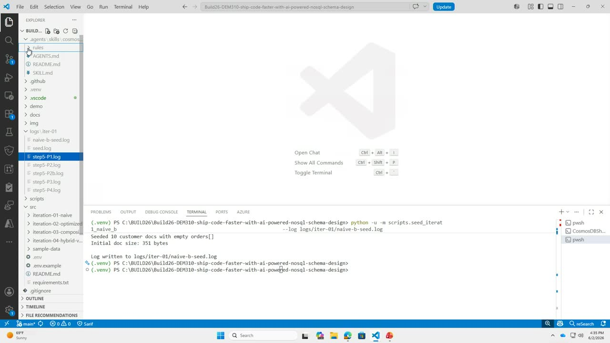
{kind=link}
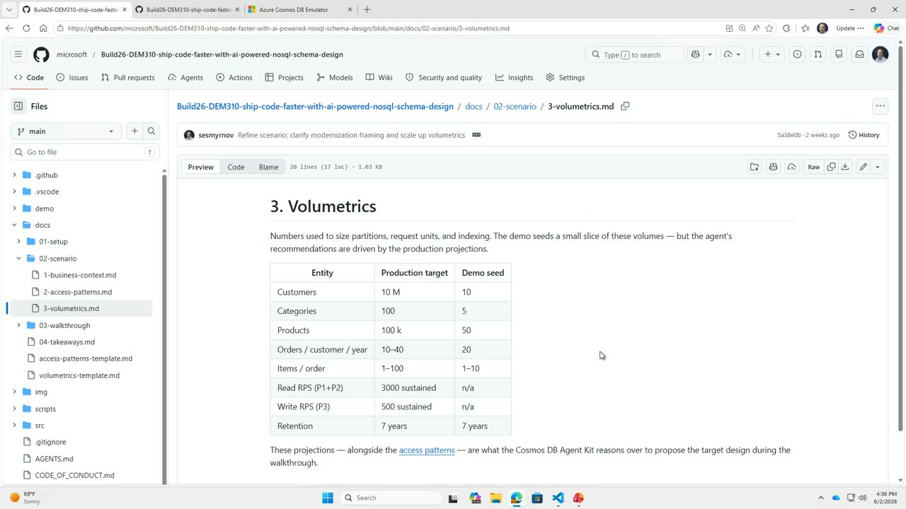
{kind=link}
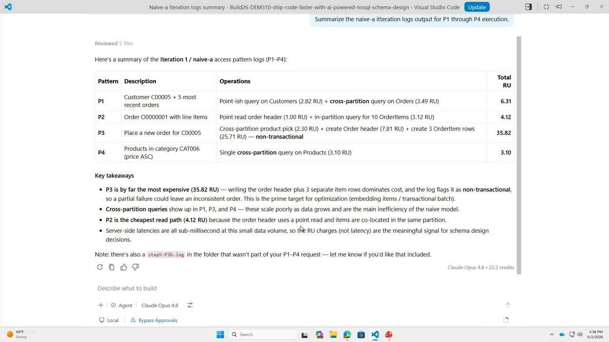
{kind=link}
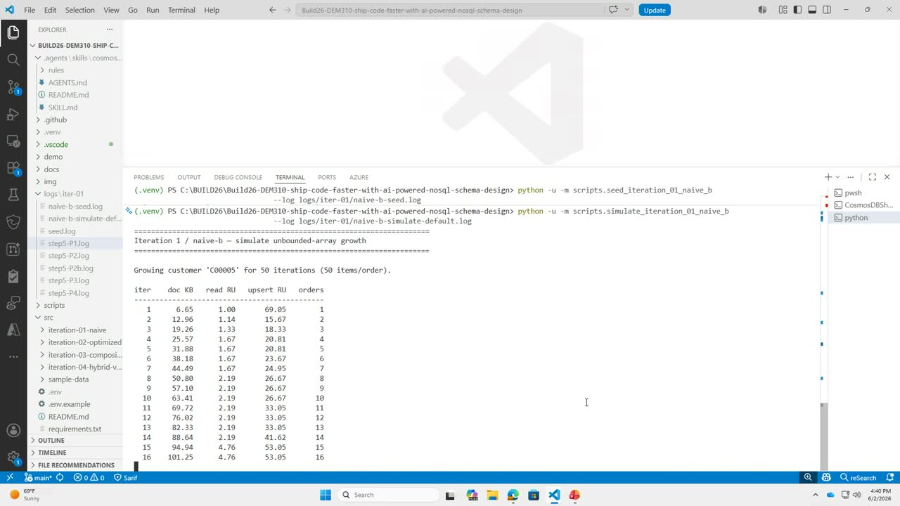
{kind=link}
{kind=link}
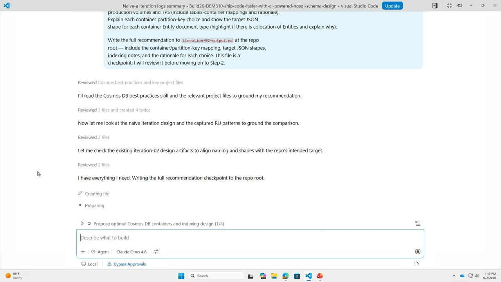
{kind=link}
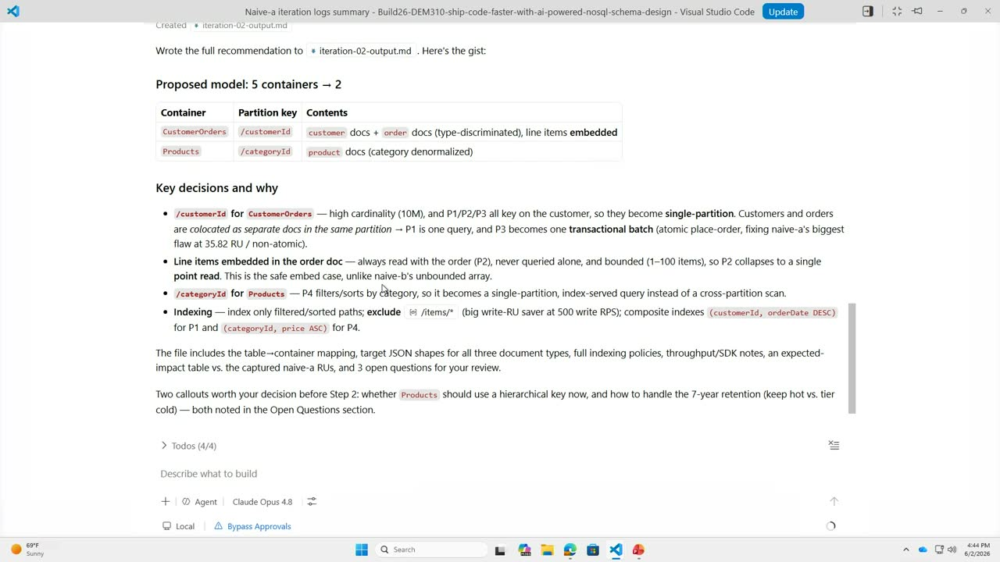
{kind=link}
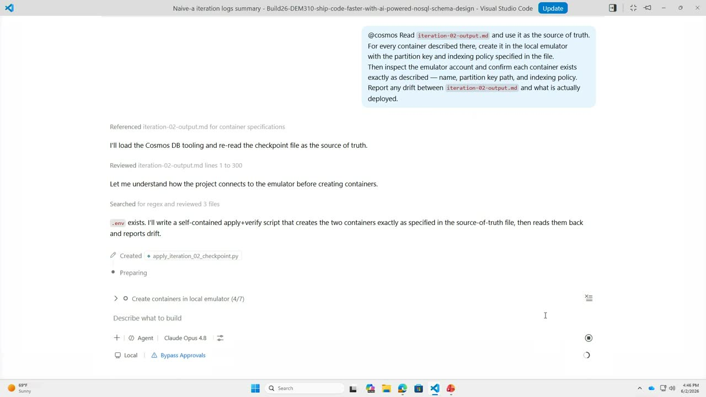
{kind=link}
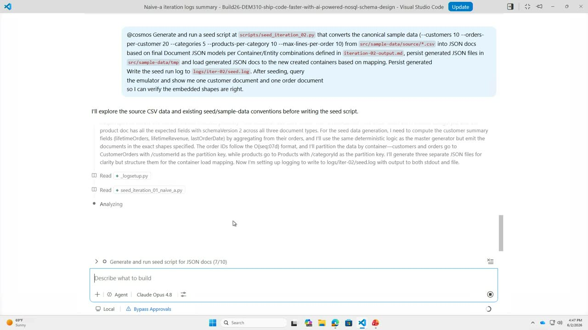
{kind=link}
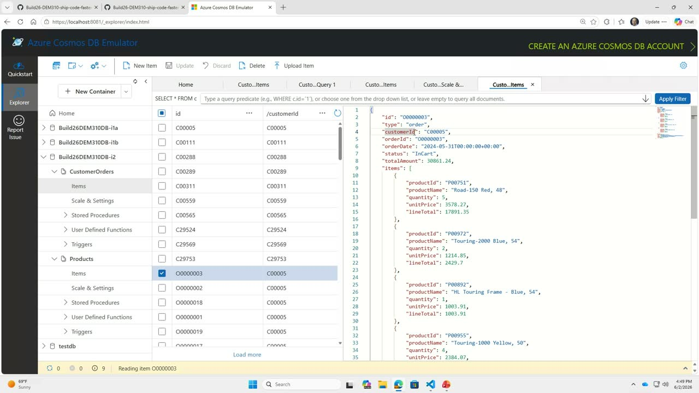
{kind=link}
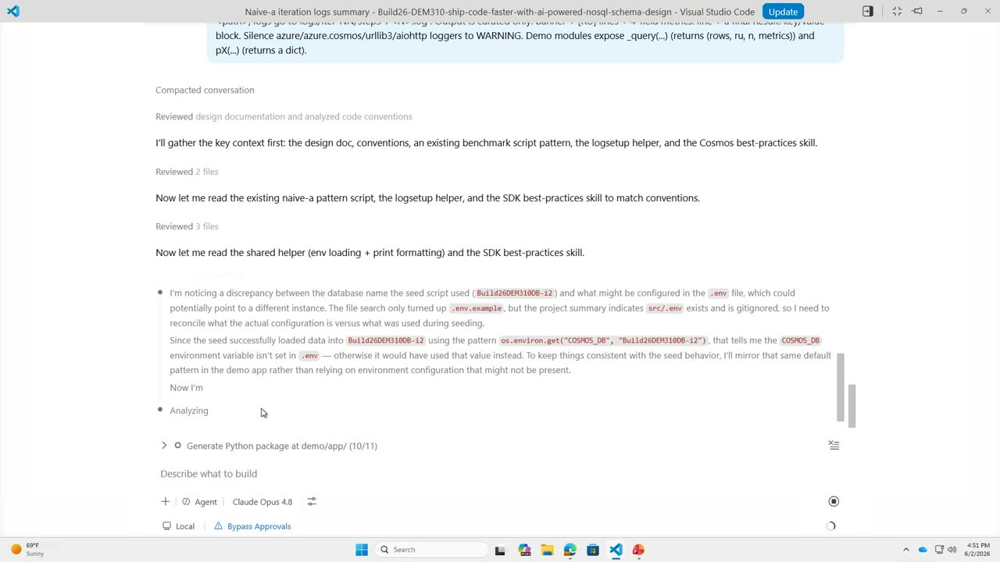
{kind=link}
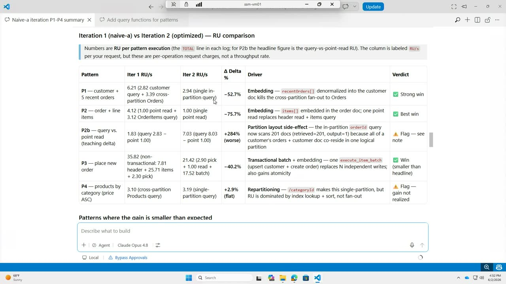
Transcript
Show / hide transcript (23,164 chars)
[00:00:02] Thank you everybody for joining us. [00:00:04] Please come in, take a seat. [00:00:06] I will be passing the mic over to Marco and [00:00:09] Sergei. [00:00:10] They will be talking about how to ship code faster [00:00:13] with AI powered, no sequel schema design. [00:00:16] The floor is yours, gentlemen. [00:00:18] Thank you and welcome everyone to this session. [00:00:21] So I'm Marco and I have Sergei with me. [00:00:24] How many of you are building no sequel applications using [00:00:27] Azure Cosmos DP? [00:00:28] Raise your hands. [00:00:30] OK, how about MongoDB, Dynamodb or something else? [00:00:35] OK, great. [00:00:36] So anyway, modern developers really love no SQL databases like [00:00:41] Azure Cosmos DP because it's really easy to evolve and [00:00:45] iterate on the no SQL schema using Jason. [00:00:48] And obviously, thinking about Azure Cosmos DP specifically, it's optimized [00:00:54] for low latency, highly scalable applications. [00:00:58] They can be like more traditional applications. [00:01:00] But today oftentimes we talk about AI and agents. [00:01:04] And so it's really great for both operational data, vector [00:01:08] data and also for AI native applications. [00:01:12] You will be able to store everything in one single [00:01:14] place, which is very important. [00:01:16] You will be able to keep your embeddings up to [00:01:18] date when you have new operational data. [00:01:20] So that's super important. [00:01:21] There's no data movement. [00:01:23] And in Azure Cosmos TV, we have a lot of [00:01:25] like intelligent features like integrated vector search, full text search, [00:01:30] even hybrid search with semantic re ranking. [00:01:33] And also it has great integrations with tools like Microsoft [00:01:37] Foundry where you can host your large language models, of [00:01:41] course. [00:01:41] And you've been hearing a lot about Foundry as well [00:01:44] as you know, a ISDKS and so on. [00:01:46] And it's really built for this low latency globally distributed [00:01:51] AI workload. [00:01:52] So great example is, for example, Open AI who is [00:01:55] using very heavily Azure Cosmos DAP for their Chachi PD, [00:01:59] ServiceNow, thinking about like development and AI. [00:02:03] So we all know byte coding, for example, you're using [00:02:06] probably Copilot, GitHub Copilot to build applications faster. [00:02:11] And and they're also like different other tools that you [00:02:15] can use to build faster, even faster than with regular [00:02:18] no SQL. [00:02:20] But then there are also ways to, you know, for [00:02:23] example, use AI to generate queries code using natural language [00:02:28] MCP integration super important. [00:02:30] It's like a USBC for apps and agents these days, [00:02:34] a standard way to connect to databases and other services [00:02:39] securely. [00:02:40] And now in this demo session, we are also going [00:02:42] to talk about Azure Cosmos DP Agent Kate. [00:02:45] And basically this is where I'm going to hand over [00:02:48] to Sergei, who is going to show an amazing demo [00:02:51] about how how to use that. [00:02:52] So the floor is yours. [00:02:54] Thank you, Marco. [00:02:56] Hi everyone. [00:02:56] Nice to meet you all. [00:02:57] So let's take a look at our demo scenario. [00:03:01] What we're going to show today, we have various simple [00:03:07] classic e-commerce application data model with customer domain, products, products [00:03:15] domain and sales order domains as a starting point. [00:03:21] Most of the apologies, this looks like I lost connection. [00:04:10] Oh, I see it now. [00:04:15] Thank you. [00:04:18] OK, go back to my demo scenario. [00:04:21] Starting point, we we see classic applications where they try [00:04:26] to modernize something, they take schema and they modernize table [00:04:31] to a container. [00:04:33] While this approach works and it's OK, it's not optimal [00:04:36] approach and we're going to show you in our demo [00:04:39] how to optimize this classic pattern. [00:04:42] To skip this and take advantage of our knowledge on [00:04:46] no SQL design and best practices to iterate faster. [00:04:53] And what we going to use in our demo is [00:04:56] Azure Cosmos DB Agent Kit, which is nothing less than [00:05:01] just a set of best practices, packaging copilot skills, which [00:05:06] you can deploy anywhere. [00:05:07] We deploy it in the escort extension, but you can [00:05:10] deploy it in any other copilot. [00:05:11] They all can. [00:05:12] As long as your copilot agent can take advantage of [00:05:16] skills, they would be useful. [00:05:21] So let's quickly jump in a demo directly. [00:05:23] I'm going to minimize this for a second. [00:05:33] What we have here is our Cosmos Agent Kit. [00:05:37] This is a public repo. [00:05:38] Anybody can download and install it. [00:05:40] All it takes is NPX skills at Azure Cosmos DB [00:05:44] Cosmos Agent Kit to install it locally. [00:05:48] What it does it deploy Agent skills, Cosmos DB best [00:05:55] practices, and a bunch of rules. [00:05:59] There is over 100 rules right now. [00:06:02] They are indexed. [00:06:02] So when you ask Copilot, do something with no SQL [00:06:06] Cosmos DB. [00:06:07] Depending what you're doing, whether you evaluate the model or [00:06:11] you building a code best, best on best practices, depending [00:06:14] on the code SDK, it applies certain set of skills [00:06:17] to optimize it. [00:06:18] We're going to show you what it does in our [00:06:20] case. [00:06:21] And then from our demo perspective, I kind of package [00:06:25] everything in the repo, which you can take away and [00:06:30] follow. [00:06:32] But the first thing I did from scenario perspective, I [00:06:35] added the knowledge domain to scenario because no SQL is [00:06:39] very important to optimize not just for data model, but [00:06:42] for access patterns. [00:06:43] And while I have the data model kind of taken [00:06:47] from like tables relationships, I want to document what my [00:06:52] access patterns are in the structured context so the agent [00:06:57] can understand and take advantage of this. [00:07:00] So I defined 4 access patterns. [00:07:04] One get customer and there are five most recent orders, [00:07:07] orders with relative volume. [00:07:09] Second get one order with line items. [00:07:13] Third one is crude operation placing order. [00:07:17] And the first one is list all from products domain, [00:07:20] list all products in a category sorted by price ascending. [00:07:25] And then there is some extended order patterns for post [00:07:28] lunch pattern 2. [00:07:30] Second part is volume metrics. [00:07:33] A lot of times we see developers when they start, [00:07:36] they often a they don't potentially know how much data [00:07:40] is they're going to have. [00:07:42] But it's important to think about it from projection. [00:07:46] What is the order of magnitude difference would be And [00:07:49] what we do to simplify this because you don't know [00:07:51] what you don't know, but you want to start somewhere. [00:07:54] So we define what we see it in a demo. [00:07:57] But for AI copilot we also document what is our [00:08:00] production target. [00:08:01] So for demo, we only test with 10 customers, like [00:08:04] you're not going to test with a million in development, [00:08:07] but in production we expect to be 10 million. [00:08:10] So whatever the number would be. [00:08:11] And then you do it for all the entities you [00:08:14] have and that would give you the range for analysis [00:08:17] to actually project whatever works for 10, will it work [00:08:21] for 10 million? [00:08:22] And that's very important, especially no SQL distributed database, because [00:08:26] every mistake you do early actually going to penalize you [00:08:29] later. [00:08:30] So those two things are important as a context to [00:08:33] add in the iterations. [00:08:35] Now let's look into actual iterations. [00:08:38] So the first thing is if we take that naive [00:08:42] design manual, anti pattern AI would call where each container, [00:08:47] each table become a container. [00:08:50] We can pick a partition key, we can run it, [00:08:53] I pre ran it so we don't have to spend [00:08:55] a whole lot of time. [00:08:57] This is an example of the naive iteration where I [00:09:01] create a simple API to run all those access patterns. [00:09:07] I documented the request units which is Cosmos DB virtual [00:09:11] compute charge to actually run per request. [00:09:15] You can see that some of those are somewhat high [00:09:17] even for small data set. [00:09:20] Now I also want to show you second often seen [00:09:23] anti pattern in no SQL where because no SQL give [00:09:26] you flexibility to combine things together. [00:09:30] A lot of times we see it's taken to extreme. [00:09:36] It's taken to extreme where the combination actually creating massive [00:09:41] write amplification. [00:09:43] To demo this, I'm going to show you where we [00:09:49] preceded the container in the emulator with customer with embedded [00:09:57] orders. [00:09:58] So everything is a customer document and I can embed [00:10:02] orders in the order array. [00:10:05] So if I'm going to simulate, whenever I create a [00:10:08] order, update the array, I'll show you what happens to [00:10:12] a charge to a request. [00:10:17] So if I go to naive D, let me run [00:10:29] this, Oh, it's already seated. [00:10:55] Now you see, I'm simulating the updating the arrays and [00:11:00] you see how with the document size grows, the cost [00:11:05] of the request also increase. [00:11:08] And at the end, I'm actually going to project that [00:11:11] with my document with only 50 iterations, my document grew [00:11:15] to 300 kilobytes plus. [00:11:17] But also my compute charge for to process the document [00:11:21] also increased to 130 request units from initial where we [00:11:26] start on the iteration 10, it was like only 660 [00:11:30] kilobytes to 2026 request units. [00:11:33] This is the end pattern we see a lot where [00:11:35] because the SQL give you flexibility to keep updating the [00:11:38] race, we see like, Oh, well, I'm going to just [00:11:40] keep patching it without understanding the compute penalty for this. [00:11:44] This is the NA pattern we also recommend to avoid. [00:11:47] So if we take those two NA patterns and say, [00:11:50] how can we optimize the data model to avoid those [00:11:54] mistakes early and measure the difference in the impact? [00:12:00] So we'll go into iteration of let's take optimized agent [00:12:04] guided design, taking those agent skills, agent kit skills installed [00:12:10] early. [00:12:11] So I'm going to take now I'm going to literally, [00:12:13] I'm lazy. [00:12:14] I'm going to just move all to copilot prompt and [00:12:17] I'm going to keep editing it. [00:12:19] So this is a summary I just ran earlier. [00:12:21] It summarizes naive pattern, a request patterns. [00:12:25] I'm going to say copilot. [00:12:28] Let's take those inputs, take the access patterns and volumetrics [00:12:32] as a context, and then propose optimal Cosmos no SQL [00:12:36] container design partition key strategy, indexing, accounting for access patterns [00:12:41] and volumes, and write full recommendations in MD file. [00:12:55] So now it's reading now access patterns, volume metrics. [00:12:58] It's reading the agent kids skills for Cosmos DB as [00:13:05] the best practices, trying to parse what it's done in [00:13:12] naive iterations, checking what was initially set up as a [00:13:19] container per table design, and creating a recommendation. [00:13:47] I wish it could done it faster. [00:14:10] Let's go. [00:14:15] It seems to be taking some time. [00:14:17] Yeah, it seems to be taking some time, yes. [00:14:19] Maybe you can recap like what we've done so far [00:14:22] while we are waiting. [00:14:25] Yes. [00:14:26] So what we've done so far is we showed the [00:14:36] classic looks like it's, yeah. [00:14:43] So it finally came up with a model. [00:14:46] Now you see that instead of container container per table [00:14:50] model, it's actually recommended to collapse domains for customer and [00:14:55] orders together and products and categories together. [00:14:59] Customer orders partitioned by customer ID which give you customer [00:15:02] docs plus order docs with type discriminator and line items [00:15:06] would be embedded in order document and in products. [00:15:09] Both products and categories are because they access by category [00:15:13] ID and there is not enough requirement to separate them [00:15:17] from the access patterns. [00:15:19] We can package them up in the category ID and [00:15:22] then product have product docs category normalized. [00:15:25] We can actually tell like this is an iterative loop [00:15:29] where if you not sure why you can ask a [00:15:32] pilot and say explain why or rationalize it. [00:15:36] Or when you have additional requirements you can fit it [00:15:39] in. [00:15:39] So just for the sake of order, I would accept [00:15:44] this and take this and deploy as a next step. [00:15:50] So next step take this output create local emulator with [00:15:53] partition keys and DX policies defined here in the document. [00:15:59] This is the beauty of Cosmos DB. [00:16:00] While Cosmos DB is no SQL database in Azure, only [00:16:05] cloud. [00:16:05] We also have the very nice emulator which install local [00:16:10] in my VM and runs locally and iterating on the [00:16:14] emulator is really really fast and easy so it should [00:16:18] be creating it in a minute. [00:16:20] This is pretty much emulator where in the initial initial [00:16:26] database AIA one was customers, orders, products, products as individual [00:16:33] containers with individual documents. [00:16:37] In the emulator, you can take any document as a [00:16:41] point look up like basic key value or you can [00:16:44] read it as a query like select star from container [00:16:48] where customer ID equal C0015. [00:16:53] And I think it should be. [00:16:55] If we refresh, it's probably done. [00:17:00] No, not yet. [00:17:01] Let me see. [00:17:11] OK, it's creating computers now. [00:17:12] All right now it should create and evaluate them. [00:17:27] Yeah, now it's creating the next database and containers customer [00:17:31] orders. [00:17:32] You can see that it created updated index policy with [00:17:36] all the properties we use in in the Access veterans. [00:17:45] OK, I think it's done. [00:17:46] We can go to next step, let's see, then validate [00:17:50] data shapes as a next step. [00:17:53] So because we combine in the in the next step, [00:17:57] in the next step, we ask him, now that you've [00:18:00] created containers and define ex policies and partition keys, take [00:18:05] sample data like in CSV based on the entities and [00:18:09] convert them into combined document shapes based on the combined [00:18:14] entities with type disk communities and validate everything from the [00:18:19] like data type measures and everything. [00:18:22] So this will quickly go and create a data migration [00:18:26] of data conversion tool to convert the data, load those [00:18:30] Jason, convert the Jason documents into the containers and validate [00:18:35] the shapes and counts. [00:18:49] And you can see that it's building the CDN scripts [00:18:53] now after analyzing the the data. [00:19:03] The one thing that's going out that there is a [00:19:06] special decimal parser and the CC files as an example [00:19:10] and it's taking as it convert to Jason data because [00:19:13] we don't have the in Jason, there's only primitive data [00:19:16] types need to convert properly. [00:19:19] Same thing happens with like data types in Jason and [00:19:22] Jason documents. [00:19:23] In Cosmos DB we don't have a data type, but [00:19:26] we convert all the time stamps and dates in ISO [00:19:30] formats, a stream which allow us to do proper date [00:19:33] ranges, sorts and everything else with data types. [00:19:45] So it when the script should be executing it now, [00:19:49] Now it's querying to validate, do like some sampling. [00:19:53] We can actually go here now and see our combined [00:19:57] documents. [00:19:57] So this is our customer with type Customer. [00:20:02] Customer ID is a partition key. [00:20:04] ID is a unique combination of partition. [00:20:06] Can ID in cosmos give you that unique key value [00:20:10] identifier and our embedded order summaries and then we have [00:20:15] also type order with the same partition key with order [00:20:20] line items built in. [00:20:22] So this is all done, should be able to go [00:20:25] to next step. [00:20:35] Now let's build the application code. [00:20:37] Now to test all those access patterns. [00:20:42] So I define simple structure models, repository, service and main [00:20:47] and Python agent kit. [00:20:48] And I'm going to just call out like use Cosmos [00:20:51] DB best practices and a document at the bottom how [00:20:54] I want to summarize the outputs for access patterns for [00:20:58] P1 through P4 so I can compare them to the [00:21:01] pre run in the naive model to actually measure the [00:21:04] execution of the request units before and after to actually [00:21:08] show the difference. [00:21:20] Yeah, it's rereading. [00:21:21] Now that we're moving from the data model to actual [00:21:24] code development, it's rereading the Cosmos DB best practice skills [00:21:28] but in different section to actually get the SDK best [00:21:31] practice skills, how to do the retries, how to do [00:21:34] the client, single time client and all other stuff. [00:21:52] It looks like I'd get confused with my daddy Andy [00:21:54] because I have example there. [00:21:57] Yeah, I wonder if my can you, can you guys [00:22:01] hear me? [00:22:03] Yeah. [00:22:03] Oh, I didn't know that you can hear me. [00:22:07] How many of you have used Azure Cosmos DP emulator? [00:22:12] OK, go and give it a try. [00:22:15] The Linux version is now out in Georgia as of [00:22:19] today, so there's been an existing one. [00:22:24] But like this is a vnext version so go and [00:22:27] give it a try. [00:22:28] Runs on your Mac or Windows laptop. [00:22:34] Linux. [00:22:40] Well it's running, we only have a few minutes left. [00:22:42] So what I'm going to do, I'm going to show [00:22:45] you the end result of this and just have like [00:22:49] pre run version model and in the end result of [00:22:52] this maximize it go back. [00:22:56] So this is a summary table of a comparison of [00:23:01] iteration A naive versus iteration B optimized. [00:23:06] So we took P1P2 and P3AS strong wins and we [00:23:11] measure delta in the percentage, but also the look at [00:23:17] the difference of how many are used per request. [00:23:22] We save in. [00:23:23] So in the P1 we save in more than 50% [00:23:26] request units per request in the P 275% requests. [00:23:32] In P 340% request, There is some differences. [00:23:37] P2B is actually shown it's it's true in both both [00:23:41] cases it's shown the difference between the single document retrieval [00:23:46] using the point read versus query and the B4 is [00:23:50] really just red here and because the difference is like [00:23:55] 0.09, so that percentage is just overhead. [00:23:59] What's most important thing is when I tell that what [00:24:02] would be the monthly cost savings if I combine those [00:24:05] are used and project for production workload. [00:24:07] Based on my volume metrics, I'm saving about 3000 reads [00:24:13] per second for P1 and P2 and 500 writes per [00:24:18] second for P3. [00:24:20] So if I combine those savings and convert them to [00:24:23] like list price and Cosmos DB, I'll save about $980,000 [00:24:27] per month by optimizing my schema. [00:24:30] But this is a true true overhead we see customers [00:24:34] losing on the table by not optimizing and doing like [00:24:38] lazy conversions. [00:24:40] And to me this is like the biggest value of [00:24:44] using no SQL database. [00:24:45] Take advantage of full flexibility but also use API to [00:24:49] validate what you do. [00:24:50] Is it optimal? [00:24:51] And like you see probably in many talks, if you [00:24:54] think of this as like every time you develop something [00:24:58] and and build, run the agent kit to validate and [00:25:01] use the API to quickly validate and measure the outputs [00:25:05] without building complex things to to do this. [00:25:09] And you can do the same thing with new things [00:25:11] like whenever you have the new requirements, feed them into [00:25:14] the copilot and say, this is my existing application structure, [00:25:18] this is my new requirements, what need to be changed [00:25:20] and what need to be set. [00:25:22] We have, I don't think we have questions, but I'll [00:25:25] be happy to step out if anybody has any questions [00:25:28] after. [00:25:30] All right. [00:25:31] Thank you everyone.